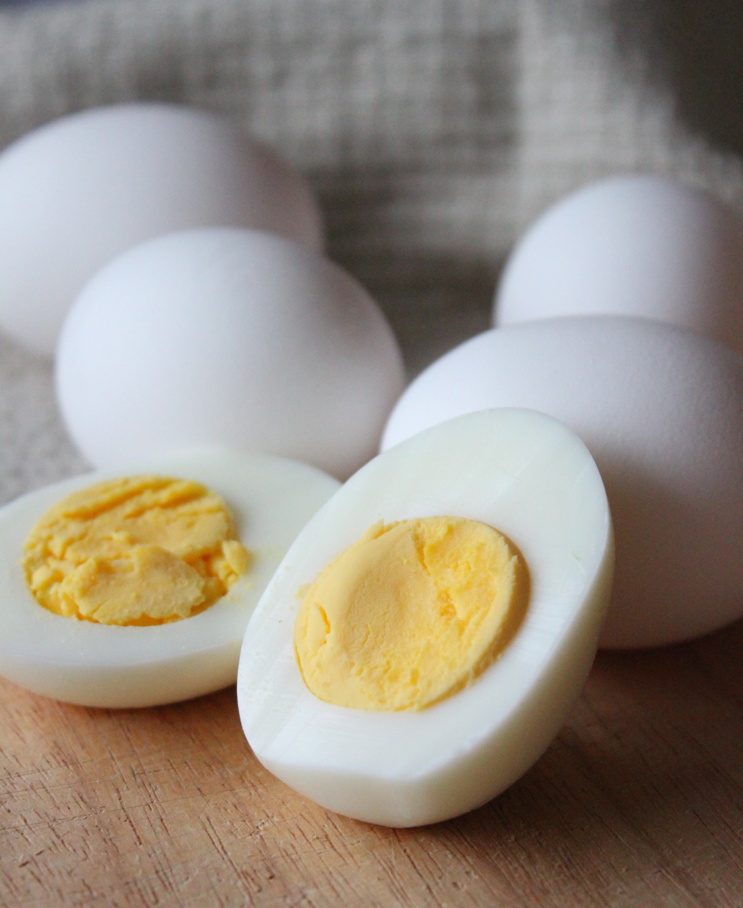

Boiled Eggs

Description
Boiled eggs are eggs that have been cooked in boiling water until both the egg white and yolk have solidified to the
desired level of doneness.The process involves placing raw eggs in a pot of water and bringing it to a boil.
Depending
on personal preference and the desired consistency of the egg, boiling times can vary.
Boiled eggs can be cooked to different levels of doneness:
- Soft-boiled eggs: These are eggs cooked for a shorter period, typically around 4-7 minutes, resulting in a firm
egg
white and a runny or semi-solid yolk.
-
Medium-boiled eggs: These are cooked slightly longer than soft-boiled eggs, usually around 7-9 minutes, resulting
in
a firmer yolk but still with a slightly soft center.
-
Hard-boiled eggs: These are eggs cooked for a longer period, typically around 9-12 minutes, resulting in both the
egg white and yolk being fully solidified.
After boiling, the eggs are usually cooled by rinsing them under cold water or placing them in an ice bath to stop
the cooking process and make them easier to handle. Boiled eggs are a versatile food item and can be eaten on their
own, used as an ingredient in various recipes, or sliced and added to salads or sandwiches.
Ingredients
- Water
- Eggs(as many as desired)
- Salt
- Pepper
Steps
-
Place the eggs in a single layer in a saucepan or pot. Make sure they are not stacked on top of each other.
-
Fill the pot with enough cold water to cover the eggs by about 1 inch (2.5 cm).
-
Place the pot on the stove over medium-high heat and bring the water to a boil.
-
Once the water reaches a rolling boil, reduce the heat to low to maintain a gentle simmer. You don't want the
water to boil too vigorously, as this can cause the eggs to crack.
-
Set a timer based on your desired level of doneness:
-
Soft-boiled eggs: 4-7 minutes
-
Medium-boiled eggs: 7-9 minutes
-
Hard-boiled eggs: 9-12 minutes
-
While the eggs are cooking, prepare a bowl of ice water.
-
When the eggs are done cooking, immediately transfer them to the bowl of ice water using a slotted spoon. This
will stop the cooking process and make the eggs easier to peel.
-
Let the eggs sit in the ice water for a few minutes to cool completely.
-
Once cooled, gently tap each egg on a hard surface to crack the shell, then peel away the shell under running
water to help remove any remaining shell pieces.
-
Your boiled eggs are now ready to eat! Enjoy them as they are, or use them in your favorite recipes.